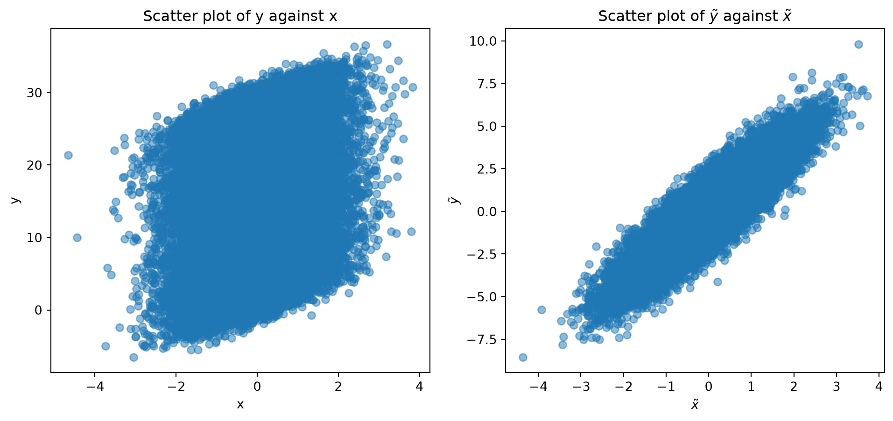

9Introduction to Statistics and Basic Machine Learning
9.1 Linear Regression
Most statistical model (supervised learning) asks the following question: given a set of independent variables \(\boldsymbol{x} = (1, x_1, x_2, \ldots, x_K)^\top\), how can we predict the dependent variable \(y\)? Mathematically, we can express this question as follows: what is the conditional expectation of \(y\) given \(\boldsymbol{x}\)? \[
\mathbb{E}(y \mid \boldsymbol{x})=f(\boldsymbol{x}).
\] Note here, we treat both \(y\) and \(\boldsymbol{x}\) as random variables. The function \(f(\cdot)\) expresses the relationship between two random variables \(y\) and \(\boldsymbol{x}\). The goal of statistical modeling is to estimate the function \(f(\cdot)\) based on the observed data. Different statistical models have different functional forms of \(f(\cdot)\). For example, the linear regression model assumes that \(f(\cdot)\) is a linear function of \(\boldsymbol{x}\), while the logistic regression model assumes that \(f(\cdot)\) is a logistic function of \(\boldsymbol{x}\). More advanced machine learning models, such as random forest and neural networks, assume that \(f(\cdot)\) is a non-linear function of \(\boldsymbol{x}\).
Population model of linear regression
Linear regression is the most basic and widely used statistical model. It is also the foundation of many advanced machine learning models. The linear regression model can be expressed as follows: \[
\underset{(1 \times 1)}{y}=\underset{(1 \times (K+1))}{\boldsymbol{x}^\top} \underset{((K+1) \times 1)}{\boldsymbol{\beta}}+\underset{(1 \times 1)}{\varepsilon}.
\] Here, \(y\) is a random variable, \(\boldsymbol{x} = (1, x_1, x_2, \ldots, x_K)^\top\) is a vector of an intercept and \(K\) random variables, \(\boldsymbol{\beta} = (\beta_0, \beta_1, \ldots, \beta_K)^\top\) is a vector of \(K+1\) parameters, and \(\varepsilon\) is a random variable with mean zero.
Therefore, it is easy to see that the first assumption of linear regression is that the relationship between \(\boldsymbol{y}\) and \(\boldsymbol{x}\) is linear: \[
\mathbb{E}(y \mid \boldsymbol{x}) = \boldsymbol{x}^\top\boldsymbol{\beta}
\tag{9.1}\]
This assumption implies that \[
\mathbb{E}(\varepsilon \mid \boldsymbol{x}) = 0.
\] Further more, we could find the moment condition \(\mathbb{E}(\varepsilon\boldsymbol{x}) = \boldsymbol{0}_{(K+1) \times 1}\) by the law of iterated expectation: \[
\mathbb{E}(\varepsilon\boldsymbol{x}) = \mathbb{E}[\mathbb{E}(\varepsilon\boldsymbol{x} \mid \boldsymbol{x})] = \mathbb{E}[\boldsymbol{x}\mathbb{E}(\varepsilon \mid \boldsymbol{x})] = \boldsymbol{0}.
\] Using the moment condition, we can derive the population regression coefficient \(\boldsymbol{\beta}\): \[
\mathbb{E}(\varepsilon\boldsymbol{x}) = \mathbb{E}[(y - \boldsymbol{x}^\top\boldsymbol{\beta})\boldsymbol{x}] = \mathbb{E}(\boldsymbol{x}y) - \mathbb{E}(\boldsymbol{x}\boldsymbol{x}^\top)\boldsymbol{\beta} = \boldsymbol{0}.
\] Rearranging the above equation, we have \[
\boldsymbol{\beta} = \mathbb{E}(\boldsymbol{x}\boldsymbol{x}^\top)^{-1}\mathbb{E}(\boldsymbol{x}y)
\tag{9.2}\]
Note that we use \(\boldsymbol{\beta}\) instead of \(\hat{\boldsymbol{\beta}}\) because we are using the population moment condition to derive the population parameter \(\boldsymbol{\beta}\). Under Equation eq-linear-regression-assumption1, this is the true value of \(\boldsymbol{\beta}\), not the estimated value.
Let’s check the derivation of Equation eq-beta again. What assumption did we implicitly make when we rearranged the equation? We implicitly assumed that \(\mathbb{E}(\boldsymbol{x}\boldsymbol{x}^\top)\) is invertible (or equivalently, \(\mathbb{E}(\boldsymbol{x}\boldsymbol{x}^\top)\) is positive definite). This is the second assumption of linear regression.
Last thing to note, in population model, \(\boldsymbol{\beta}\) is a fixed parameter and has no distribution.
Sample model of linear regression
In practice, we do not have access to the population data. Or say, we cannot compute the expectation \(\mathbb{E}(\cdot)\) as we do not have access to the probability distribution of \((y, \boldsymbol{x})\). Instead, we can collect a sample of \(N\) observations \(\{(y_i, \boldsymbol{x}_i)\}_{i=1}^N\). Each sample satisfies the population model of linear regression: \[
y_i = \boldsymbol{x}_i^\top\boldsymbol{\beta} + \varepsilon_i, \quad i = 1, 2, \ldots, N.
\tag{9.3}\]
The sample model of linear regression can be expressed as follows in matrix form: \[
\underset{N\times 1}{\boldsymbol{y}} = \underset{N \times (K+1)}{\boldsymbol{X}}\underset{(K+1)\times 1}{\boldsymbol{\beta}} + \underset{N \times 1}{\boldsymbol{\varepsilon}},
\] Note that each observation \((y_i, \boldsymbol{x}_i)\) is a pair of random variables drawn from the population model in Equation eq-linear-regression-sample-model. Before the sample is observed, both \(\boldsymbol{y}\) and \(\boldsymbol{X}\) are random. After the data are collected, they are the realized data matrix and outcome vector.
The population moment condition suggests a sample estimating equation. The sample estimator of \(\mathbb{E}(\varepsilon\boldsymbol{x})\) is \[
\frac{1}{N}\sum_{i=1}^N \varepsilon_i\boldsymbol{x}_i = \frac{1}{N}\boldsymbol{X}^\top\boldsymbol{\varepsilon}.
\] Note that we say \(\frac{1}{N}\sum_{i=1}^N \varepsilon_i\boldsymbol{x}_i\) is the sample estimator of \(\mathbb{E}(\varepsilon\boldsymbol{x})\) because it is unbiased: \[
\mathbb{E}\left(\frac{1}{N}\sum_{i=1}^N \varepsilon_i\boldsymbol{x}_i\right) = \frac{1}{N}\sum_{i=1}^N \mathbb{E}(\varepsilon_i\boldsymbol{x}_i) = \mathbb{E}(\varepsilon\boldsymbol{x}).
\] Therefore, the sample moment condition is \[
\boldsymbol{X}^\top\boldsymbol{\varepsilon} = \boldsymbol{0}.
\] Rearrange to find the expression of \(\hat{\boldsymbol{\beta}}\): \[
\begin{aligned}
\boldsymbol{X}^\top\boldsymbol{\varepsilon} &= \boldsymbol{0} \\
\boldsymbol{X}^\top(\boldsymbol{y}-\boldsymbol{X}\hat{\boldsymbol{\beta}}) &= \boldsymbol{0} \\
\boldsymbol{X}^\top\boldsymbol{y}-\boldsymbol{X}^\top\boldsymbol{X}\hat{\boldsymbol{\beta}} &= \boldsymbol{0} \\
\boldsymbol{X}^\top\boldsymbol{X}\hat{\boldsymbol{\beta}} &= \boldsymbol{X}^\top\boldsymbol{y} \\
\end{aligned}
\]\[
\hat{\boldsymbol{\beta}} = (\boldsymbol{X}^\top\boldsymbol{X})^{-1}\boldsymbol{X}^\top\boldsymbol{y}
\]
Note that we use \(\hat{\boldsymbol{\beta}}\) instead of \(\boldsymbol{\beta}\) because we are using the sample model to estimate the population parameter \(\boldsymbol{\beta}\). This is the estimated value of \(\boldsymbol{\beta}\), not the true value.
During the derivation of \(\hat{\boldsymbol{\beta}}\), we also implicitly assumed that there exits a random sample \(\{(y_i, \boldsymbol{x}_i)\}_{i=1}^N\) and also that \(\boldsymbol{X}^\top\boldsymbol{X}\) is invertible. This is the third assumption of linear regression.
As each observation \((y_i, \boldsymbol{x}_i)\) is a pair of random variable, \(\hat{\boldsymbol{\beta}}\) is also a random variable that follows a certain distribution. Since we made no assumption of \(\boldsymbol{x}_i\) regarding probability distribution, but some assumptions of the distribution of \(y_i\) and \(\varepsilon_i\), i.e. \[
\mathbb{E}(y_i\mid\boldsymbol{x}_i) = \boldsymbol{x}_i^\top \boldsymbol{\beta} \quad \text{and} \quad \mathbb{E}(\varepsilon_i\mid\boldsymbol{x}_i) = 0
\] we will analyze the property of \(\hat{\boldsymbol{\beta}}\) conditional on \(\boldsymbol{X}\).
The estimator’s sampling behavior becomes clear after substituting the sample model into the expression of \(\hat{\boldsymbol{\beta}}\): \[
\begin{aligned}
\hat{\boldsymbol{\beta}}
&= (\boldsymbol{X}^\top\boldsymbol{X})^{-1}\boldsymbol{X}^\top
(\boldsymbol{X}\boldsymbol{\beta}+\boldsymbol{\varepsilon})\\
&= \boldsymbol{\beta}
+(\boldsymbol{X}^\top\boldsymbol{X})^{-1}\boldsymbol{X}^\top\boldsymbol{\varepsilon}.
\end{aligned}
\tag{9.4}\] The second term is the estimation error. Since the sample contains random observations, \(\hat{\boldsymbol{\beta}}\) is itself a random vector, even though \(\boldsymbol{\beta}\) is a fixed population parameter.
Under the assumption \(\mathbb{E}(\varepsilon_i\mid\boldsymbol{x}_i) = 0\), the expectation of \(\hat{\boldsymbol{\beta}}\) is \[
\mathbb{E}(\hat{\boldsymbol{\beta}}\mid\boldsymbol{X})=\boldsymbol{\beta}.
\] The variance of \(\hat{\boldsymbol{\beta}}\) is \[
\begin{aligned}
\operatorname{Var}(\hat{\boldsymbol{\beta}}\mid\boldsymbol{X})
&= \operatorname{Var}\left[\boldsymbol{\beta} +(\boldsymbol{X}^\top\boldsymbol{X})^{-1}\boldsymbol{X}^\top\boldsymbol{\varepsilon}\mid \boldsymbol{X} \right] \\
&= \operatorname{Var}\left[(\boldsymbol{X}^\top\boldsymbol{X})^{-1}\boldsymbol{X}^\top\boldsymbol{\varepsilon}\mid \boldsymbol{X} \right]\\
&= (\boldsymbol{X}^\top\boldsymbol{X})^{-1}\boldsymbol{X}^\top\operatorname{Var}\left[\boldsymbol{\varepsilon}\mid\boldsymbol{X}\right]\left((\boldsymbol{X}^\top\boldsymbol{X})^{-1}\boldsymbol{X}^\top\right)^\top\\
&= (\boldsymbol{X}^\top\boldsymbol{X})^{-1}\boldsymbol{X}^\top\operatorname{Var}\left[\boldsymbol{\varepsilon}\mid\boldsymbol{X}\right]\boldsymbol{X}(\boldsymbol{X}^\top\boldsymbol{X})^{-1}
\end{aligned}
\] The fourth assumption of linear regression is homoscedasticity: \[
\operatorname{Var}\left[\boldsymbol{\varepsilon}\mid\boldsymbol{X}\right] = \sigma^2 \boldsymbol{I}
\] Under homoscedasticity, \[
\operatorname{Var}(\hat{\boldsymbol{\beta}}\mid\boldsymbol{X}) = \sigma^2 (\boldsymbol{X}^\top\boldsymbol{X})^{-1}
\]
If we further assume \[
\boldsymbol{\varepsilon}\mid\boldsymbol{X}\sim\mathcal{N}(\boldsymbol{0},\sigma^2\boldsymbol{I}_N),
\] which is the fifth assumption of linear regression, then the estimator has the exact conditional distribution \[
\hat{\boldsymbol{\beta}}- \boldsymbol{\beta}\mid\boldsymbol{X}
\sim \mathcal{N}\!\left(\boldsymbol{0},\,\sigma^2(\boldsymbol{X}^\top\boldsymbol{X})^{-1}\right).
\]
Distribution of \(\hat{\boldsymbol{\beta}}\)
To get the distribution of \(\hat{\boldsymbol{\beta}}\), we still need to estimate \(\sigma^2\). The estimator of \(\sigma^2\) is not \(\frac{1}{N}\sum_{i=1}^N \hat{\varepsilon}_i^2\) because it is biased. Instead, we can show that the unbiased estimator of \(\sigma^2\) is \[
\hat{\sigma}^2 = \frac{1}{N-K-1}\sum_{i=1}^N \hat{\varepsilon}_i^2 = \frac{\hat{\boldsymbol{\varepsilon}}^\top\hat{\boldsymbol{\varepsilon}}}{N-K-1}. \quad \Rightarrow \quad \mathbb{E}(\hat{\sigma}^2\mid\boldsymbol{X}) = \sigma^2
\]
Before prove the unbiasedness of \(\hat{\sigma}^2\), we first introduce trace operator.
Definition 9.1 The trace of a square matrix \(\boldsymbol{A}\) is the sum of its diagonal elements, denoted by \[
\operatorname{tr}(\boldsymbol{A}) = \sum_{i=1}^n a_{ii}.
\]
\(\operatorname{tr}(\boldsymbol{A}\boldsymbol{B}) = \operatorname{tr}(\boldsymbol{B}\boldsymbol{A})\) for any matrices \(\boldsymbol{A}\) and \(\boldsymbol{B}\) such that the products are defined.
Now we can prove the unbiasedness of \(\hat{\sigma}^2\). Firstly, we can express \(\hat{\boldsymbol{\varepsilon}}\) as follows: \[
\hat{\boldsymbol{\varepsilon}} = \boldsymbol{y} - \hat{\boldsymbol{y}} = \left(\boldsymbol{I}_N - \boldsymbol{X}(\boldsymbol{X}^\top\boldsymbol{X})^{-1}\boldsymbol{X}^\top\right)\boldsymbol{y} = \left(\boldsymbol{I}_N - \boldsymbol{H}\right)\boldsymbol{y}
\] where \(\boldsymbol{H} \equiv \boldsymbol{X}(\boldsymbol{X}^\top\boldsymbol{X})^{-1}\boldsymbol{X}^\top\).
We can see that \(\boldsymbol{H}\) is a special matrix with the following properties:
Further decompose \(\boldsymbol{y}\) using the sample model of linear regression, we have \[
\hat{\boldsymbol{\varepsilon}} = \left(\boldsymbol{I}_N - \boldsymbol{H}\right)(\boldsymbol{X}\boldsymbol{\beta} + \boldsymbol{\varepsilon}) = \left(\boldsymbol{I}_N - \boldsymbol{H}\right)\boldsymbol{\varepsilon}
\]
Now let’s compute the expectation of \(\hat{\sigma}^2\) conditional on \(\boldsymbol{X}\): \[
\begin{aligned}
&\mathbb{E}[\frac{\hat{\boldsymbol{\varepsilon}}^\top\hat{\boldsymbol{\varepsilon}}}{N-K-1}\mid \boldsymbol{X}] \\
=& \frac{1}{N-K-1}\mathbb{E}[\hat{\boldsymbol{\varepsilon}}^\top\hat{\boldsymbol{\varepsilon}} \mid \boldsymbol{X}] \\
=& \frac{1}{N-K-1}\mathbb{E}[\operatorname{tr}(\hat{\boldsymbol{\varepsilon}}^\top\hat{\boldsymbol{\varepsilon}})\mid \boldsymbol{X}] \quad \text{The trace of a number is the same as the number itself.} \\
=& \frac{1}{N-K-1}\mathbb{E}[\operatorname{tr}(\hat{\boldsymbol{\varepsilon}}\hat{\boldsymbol{\varepsilon}}^\top)\mid \boldsymbol{X}] \quad \text{Rule 3} \\
=& \frac{1}{N-K-1}\operatorname{tr}(\mathbb{E}[\hat{\boldsymbol{\varepsilon}}\hat{\boldsymbol{\varepsilon}}^\top\mid \boldsymbol{X}]) \quad \text{By def: } \mathbb{E}[\operatorname{tr}(\boldsymbol{A})] = \sum_{i=1}^n \mathbb{E}[a_{ii}] = \operatorname{tr}(\mathbb{E}[\boldsymbol{A}]) \\
\end{aligned}
\] Plug in the expression of \(\hat{\boldsymbol{\varepsilon}}\) and we have \[
\mathbb{E}[\hat{\boldsymbol{\varepsilon}}\hat{\boldsymbol{\varepsilon}}^\top\mid \boldsymbol{X}]
= \left(\boldsymbol{I}_N - \boldsymbol{H}\right)\mathbb{E}[\boldsymbol{\varepsilon}\boldsymbol{\varepsilon}^\top\mid \boldsymbol{X}]\left(\boldsymbol{I}_N - \boldsymbol{H}\right)^\top = \sigma^2\left(\boldsymbol{I}_N - \boldsymbol{H}\right)
\] Therefore, we have \[
\operatorname{tr}(\mathbb{E}[\hat{\boldsymbol{\varepsilon}}\hat{\boldsymbol{\varepsilon}}^\top\mid \boldsymbol{X}]) = \operatorname{tr}(\sigma^2\left(\boldsymbol{I}_N - \boldsymbol{H}\right)) = \sigma^2\left(\operatorname{tr}(\boldsymbol{I}_N) - \operatorname{tr}(\boldsymbol{H})\right) = \sigma^2(N-K-1)
\] The last equality follows from the fact that \(\operatorname{tr}(\boldsymbol{I}_N) = N\), and \[
\begin{aligned}
\operatorname{tr}(\boldsymbol{H})
&= \operatorname{tr}(\boldsymbol{X}(\boldsymbol{X}^\top\boldsymbol{X})^{-1}\boldsymbol{X}^\top) \\
&= \operatorname{tr}((\boldsymbol{X}^\top\boldsymbol{X})^{-1}\boldsymbol{X}^\top\boldsymbol{X}) \\
&= \operatorname{tr}(\boldsymbol{I}_{K+1}) \\
&= K+1
\end{aligned}
\] Plugging the above result into the expectation of \(\hat{\sigma}^2\), we get the final result: \[
\mathbb{E}[\frac{\hat{\boldsymbol{\varepsilon}}^\top\hat{\boldsymbol{\varepsilon}}}{N-K-1}\mid \boldsymbol{X}] = \sigma^2
\]
Now, we are ready to derive the distribution of \(\hat{\boldsymbol{\beta}}\). By the property of \(\chi^2\) distribution 1, we have \[
\frac{(N-K-1)\hat{\sigma}^2}{\sigma^2} = \frac{\hat{\boldsymbol{\varepsilon}}^\top\hat{\boldsymbol{\varepsilon}}}{\sigma^2} = \frac{\boldsymbol{\varepsilon}^\top}{\sigma}(\boldsymbol{I}_N - \boldsymbol{H})\frac{\boldsymbol{\varepsilon}}{\sigma} \sim \chi^2_{N-K-1}
\] The second equality follows from the fact that \((\boldsymbol{I}_N - \boldsymbol{H})^\top(\boldsymbol{I}_N - \boldsymbol{H}) = \boldsymbol{I}_N - \boldsymbol{H}\). The third equality follows from the fact that \(\operatorname{rank}(\boldsymbol{I}_N - \boldsymbol{H}) = N-K-1\).
Since \(\hat{\boldsymbol{\beta}}- \boldsymbol{\beta} \sim \mathcal{N}(\boldsymbol{0},\sigma^2(\boldsymbol{X}^\top\boldsymbol{X})^{-1})\), then \[
\frac{\hat{\beta}_j - \beta_j}{\sigma\sqrt{[(\boldsymbol{X}^\top\boldsymbol{X})^{-1}]_{jj}}}\sim \mathcal{N}(0, 1)
\] By the definition of \(t\) distribution 2, we have \[
\frac{\hat{\beta}_j - \beta_j}{\hat{\sigma}\sqrt{[(\boldsymbol{X}^\top\boldsymbol{X})^{-1}]_{jj}}} \sim t_{N-K-1}.
\] Based on the above result, we can construct test statistics and confidence intervals.
In the case of large sample size, we do not need to assume that \(\boldsymbol{\varepsilon}\mid\boldsymbol{X}\sim\mathcal{N}(\boldsymbol{0},\sigma^2\boldsymbol{I}_N)\). By the central limit theorem, we have \[
\sqrt{N}(\hat{\boldsymbol{\beta}} - \boldsymbol{\beta}) \mid \boldsymbol{X} \xrightarrow{d} \mathcal{N}(\boldsymbol{0},\sigma^2\mathbb{E}(\boldsymbol{x}\boldsymbol{x}^\top)^{-1})
\] “\(\xrightarrow{d}\)” means convergence in distribution.
Sometimes, we also drop the homoscedasticity assumption and allow for heteroscedasticity. In this case, we generally use the robust standard error or clustered standard error to estimate the variance of \(\hat{\boldsymbol{\beta}}\). We already know that \[
\operatorname{Var}(\hat{\boldsymbol{\beta}}\mid\boldsymbol{X}) = (\boldsymbol{X}^\top\boldsymbol{X})^{-1}\boldsymbol{X}^\top\operatorname{Var}\left[\boldsymbol{\varepsilon}\mid\boldsymbol{X}\right]\boldsymbol{X}(\boldsymbol{X}^\top\boldsymbol{X})^{-1}
\] Under homoscedasticity, \[
\widehat{\operatorname{Var}(\hat{\boldsymbol{\beta}}\mid\boldsymbol{X})} = \hat{\sigma}^2(\boldsymbol{X}^\top\boldsymbol{X})^{-1}, \qquad \hat{\sigma}^2 = \frac{\hat{\boldsymbol{\varepsilon}}^\top\hat{\boldsymbol{\varepsilon}}}{N-K-1}
\] Under heteroscedasticity, we assume that the variance of \(\varepsilon_i\) is not constant, i.e. for \(i = 1, 2, \ldots, N\), \(\operatorname{Var}(\varepsilon_i\mid\boldsymbol{x}_i) = \sigma_i^2\). In this case, the estimated variance of \(\hat{\boldsymbol{\beta}}\) is \[
\widehat{\operatorname{Var}(\hat{\boldsymbol{\beta}}\mid\boldsymbol{X})} = (\boldsymbol{X}^\top\boldsymbol{X})^{-1}\boldsymbol{X}^\top\widehat{\Sigma}\boldsymbol{X}(\boldsymbol{X}^\top\boldsymbol{X})^{-1},
\qquad
\widehat{\Sigma} =
\begin{bmatrix}
\varepsilon_1^2 & & \\
& \ddots & \\
& & \varepsilon_N^2
\end{bmatrix}
\] Under clustered standard error, the \(\Sigma\) is not only diagonal. For example, consider two firms \(A, B\) and two periods 1,2 , ordered as \[
(A 1, A 2, B 1, B 2) .
\] With firm clustering alone, the covariance pattern is \[
\Sigma_{\mathrm{firm}}=
\begin{bmatrix}
* & * & 0 & 0 \\
* & * & 0 & 0 \\
0 & 0 & * & * \\
0 & 0 & * & *
\end{bmatrix}.
\] With time clustering alone, \[
\Sigma_{\text {time }}=
\begin{bmatrix}
* & 0 & * & 0 \\
0 & * & 0 & * \\
* & 0 & * & 0 \\
0 & * & 0 & *
\end{bmatrix}.
\] With two-way clustering, both types of dependence are permitted, giving a pattern like \[
\Sigma_{2 \mathrm{way}}=
\begin{bmatrix}
* & * & * & 0 \\
* & * & 0 & * \\
* & 0 & * & * \\
0 & * & * & *
\end{bmatrix}.
\]
Absorbing (high-dimensional fixed effects)
Absorbing is a technique used in linear regression to handle categorical variables with many levels. In STATA, the command hdfe uses absorbing to estimate linear regression with high-dimensional fixed effects. The idea is to transform the data by removing the effects of the categorical variables before estimating the regression coefficients.
Theorem 9.1 (Frisch-Waugh-Lowell Theorem) In regression \(\boldsymbol{y}=\boldsymbol{X}{\hat {\boldsymbol{\beta} }}+\boldsymbol{Z}{\hat {\boldsymbol{\delta}}}+{\hat{\boldsymbol{e}}}\), where \(\boldsymbol{X}\) is an \(N\times K\) matrix of \(K\) independent variables’ observations, \(\boldsymbol{Z}\) is an \(N\times P\) matrix of \(P\) independent variables’ observations, and \({\hat {\boldsymbol{\beta} }}\) and \({\hat {\boldsymbol{\delta}}}\) are \(K\times 1\) and \(P\times 1\) coefficient vectors for \(\boldsymbol{X}\) and \(\boldsymbol{Z}\), respectively. Then, the Frisch–Waugh–Lovell theorem states that \[
\hat{\boldsymbol{\beta}}=({\tilde{\boldsymbol{X}}}^\top{\tilde{\boldsymbol{X}}})^{-1}{\tilde {\boldsymbol{X}}}^\top \boldsymbol{y}=({\tilde {\boldsymbol{X}}}^\top{\tilde {\boldsymbol{X}}})^{-1}{\tilde {\boldsymbol{X}}}^\top {\tilde {\boldsymbol{y}}}
\] where \[
\tilde{\boldsymbol{X}}=\boldsymbol{X}-\boldsymbol{Z}(\boldsymbol{Z}^\top\boldsymbol{Z})^{-1}\boldsymbol{Z}^\top\boldsymbol{X}
\] the residuals from the least squares regression of \(\boldsymbol{X}\) on \(\boldsymbol{Z}\), and \[
{\tilde {\boldsymbol{y}}}=\boldsymbol{y}-\boldsymbol{Z}(\boldsymbol{Z}^\top\boldsymbol{Z})^{-1}\boldsymbol{Z}^\top\boldsymbol{y}
\] the residuals from the least squares regression of \(\boldsymbol{y}\) on \(\boldsymbol{Z}\).
The theorem is easy to prove. Define \(\boldsymbol{H} = \boldsymbol{Z}(\boldsymbol{Z}^\top\boldsymbol{Z})^{-1}\boldsymbol{Z}^\top\), we have \[
\begin{aligned}
(\boldsymbol{I}_N - \boldsymbol{H})\boldsymbol{y} &= (\boldsymbol{I}_N - \boldsymbol{H})\boldsymbol{X}\hat{\boldsymbol{\beta}} + (\boldsymbol{I}_N - \boldsymbol{H})\boldsymbol{Z}\hat{\boldsymbol{\delta}} + (\boldsymbol{I}_N - \boldsymbol{H})\hat{\boldsymbol{e}} \\
\tilde{\boldsymbol{y}} &= \tilde{\boldsymbol{X}}\hat{\boldsymbol{\beta}} + \hat{\boldsymbol{e}}
\end{aligned}
\] The second equatlity follows from the moment condition \(\boldsymbol{Z}^\top\hat{\boldsymbol{e}} = \boldsymbol{0}\).
In the below code, I generated a random dataset with 3000 categories and 30,000 observations. I then estimated the linear regression coefficients using both the traditional OLS method with dummy variables and the absorbing method. The traditional OLS method took significantly longer to compute than the absorbing method. The reason is that the traditional OLS method stacks the independent variables and the dummy variables together into one matrix, which is extremely hard to invert. However, absorbing method firstly defines a sparse matrix for the dummy variables and then uses the Frisch-Waugh-Lovell theorem to transform the independent variables and dependent variable before estimating the coefficients. Technically, it is much faster to invert a sparse matrix than a dense matrix.
Code
import numpy as npfrom scipy import sparseimport timeit# generate random data with 3000 categories# y = alpha_c + beta * x + epsilon, where alpha_c is the category fixed effectN =30000# number of observations, each category has 10 observationsK =1# number of independent variablesP =3000# number of categoriesnp.random.seed(0)# generate random independent variable xx = np.random.randn(N, K)# generate category fixed effect alpha_calpha_c = np.arange(P) *0.01# generate category assignment for each observation# no left out category, each category has N//P observationscategory = np.repeat(np.arange(P), N//P).reshape(N, 1)# generate random error term epsilonepsilon = np.random.randn(N, 1)# generate dependent variable yy = alpha_c[category] + x *2+ epsilon# create dummy variables for each categoryz = np.eye(P)[category.flatten()] def estimate_ols(z, x, y): X = np.hstack((z, x)) beta_hat = np.linalg.pinv(X.T @ X) @ X.T @ yreturn beta_hatdef absorb_ols(z, x): z_sparse = sparse.csr_matrix(z) tilde_x = x - (z_sparse @ sparse.linalg.spsolve(z_sparse.T @ z_sparse, z_sparse.T @ x)).reshape(N,K) beta_hat = np.linalg.pinv(tilde_x.T @ tilde_x) @ tilde_x.T @ yreturn beta_hat# count time for estimating OLS with dummy variablest_ols = timeit.repeat('estimate_ols(z, x, y)', globals=globals(), number=1, repeat=5)t_ols = np.array(t_ols)mean_time_ols = np.mean(t_ols)std_time_ols = np.std(t_ols)reps_ols =len(t_ols)print(f"Time for estimating OLS with dummy variables: {mean_time_ols:.2f} seconds (± {std_time_ols:.2f}) from {reps_ols} repetitions")# count time for estimating OLS with absorbingt_absorb = timeit.repeat('absorb_ols(z, x)', globals=globals(), number=1, repeat=10)t_absorb = np.array(t_absorb)mean_time_absorb = np.mean(t_absorb)std_time_absorb = np.std(t_absorb)reps_absorb =len(t_absorb)print(f"Time for estimating OLS with absorbing: {mean_time_absorb:.2f} seconds (± {std_time_absorb:.2f}) from {reps_absorb} repetitions")
Time for estimating OLS with dummy variables: 16.60 seconds (± 3.10) from 5 repetitions
Time for estimating OLS with absorbing: 0.27 seconds (± 0.05) from 10 repetitions
In the below figures, I plot the scatter plot of \(y\) against \(x\) on the left and the scatter plot of \(\tilde{y}\) against \(\tilde{x}\) on the right. The left figure is a messy plot because the category fixed effect \(\alpha_c\) is not removed, so the relationship between \(y\) and \(x\) is obscured. The right figure is a clean plot showing the relationship between \(y\) and \(x\) after removing the category fixed effect \(\alpha_c\).
Code
import matplotlib.pyplot as pltz_sparse = sparse.csr_matrix(z)tilde_x = x - (z_sparse @ sparse.linalg.spsolve(z_sparse.T @ z_sparse, z_sparse.T @ x)).reshape(N,K)tilde_y = y - (z_sparse @ sparse.linalg.spsolve(z_sparse.T @ z_sparse, z_sparse.T @ y)).reshape(N,1)fig, axs = plt.subplots(1, 2, figsize=(12, 5))axs[0].scatter(x, y, alpha=0.5)axs[0].set_xlabel('x')axs[0].set_ylabel('y')axs[0].set_title('Scatter plot of y against x')# Scatter plot of tilde_y against tilde_xaxs[1].scatter(tilde_x, tilde_y, alpha=0.5)axs[1].set_xlabel(r'$\tilde{x}$')axs[1].set_ylabel(r'$\tilde{y}$')axs[1].set_title(r'Scatter plot of $\tilde{y}$ against $\tilde{x}$')plt.show()

Ordinary Least Squares (OLS)
Ordinary Least Squares (OLS) is a method for estimating linear regression. However, OLS is not the only method for estimating linear regression. As we have seen, the OLS estimator is derived from the moment condition \(\mathbb{E}(\varepsilon\boldsymbol{x}) = \boldsymbol{0}\). In general, we can use any method that satisfies the moment condition to estimate the linear regression coefficients. OLS is just one of the many methods that satisfy the moment condition and is the most commonly used method. As we have seen OLS in sec-la-decomp, we skip the OLS derivation here.
9.2 Logistic Regression
Logistic regression is a method for estimating the relationship between a binary dependent variable \(y\) and one or more independent variables \(\boldsymbol{x}\). The binary dependent variable takes on the value of 0 or 1, and the independent variables can be continuous or categorical.
As we just mentioned, most statistical methods are to fit a function for the conditional mean of the dependent variable given the independent variables \(\mathbb{E}(y \mid \boldsymbol{x})=f(\boldsymbol{x})\). In linear regression, we assume that the conditional mean is a linear function of the independent variables, i.e. \(\mathbb{E}(y \mid \boldsymbol{x}) = \boldsymbol{x}^\top\boldsymbol{\beta}\). In classification problems, if the dependent variable is binary that takes on the value of 0 or 1, the expectation of \(y\) is \[
\mathbb{E}(y \mid \boldsymbol{x}) = 0 \cdot \mathbb{P}(y=0 \mid \boldsymbol{x}) + 1 \cdot \mathbb{P}(y=1 \mid \boldsymbol{x}) = \mathbb{P}(y=1 \mid \boldsymbol{x}).
\] Therefore, we can interpret the conditional mean of \(y\) as the probability of \(y=1\) given \(\boldsymbol{x}\). As the probability of \(y=1\) is between 0 and 1, we need to ensure that the conditional mean of \(y\) is also between 0 and 1. Therefore, in logistic regression, we just add a non-linear transformation to the linear function, i.e. \[
\mathbb{P}(y=1 \mid \boldsymbol{x}) = f(\boldsymbol{x}^\top\boldsymbol{\beta})
\] where \(f(\cdot)\) is a non-linear function that maps the linear function to the range of \([0, 1]\). The most commonly used non-linear function \(f\) is the logistic function: \[
\operatorname{logistic}(\boldsymbol{x}^\top\boldsymbol{\beta}) = \frac{1}{1 + e^{-\boldsymbol{x}^\top\boldsymbol{\beta}}}.
\] Since \(y\) is a binary variable, we can interpret \(\mathbb{E}(y \mid \boldsymbol{x})\) as the probability of \(y=1\) given \(\boldsymbol{x}\), i.e. \[
\mathbb{E}(y \mid \boldsymbol{x}) = \mathbb{P}(y=1 \mid \boldsymbol{x}) = \operatorname{logistic}(\boldsymbol{x}^\top\boldsymbol{\beta}).
\]
Logistic function is not the only non-linear function that can be used. Sometimes, people use the probit function, which is the cumulative distribution function of the standard normal distribution. Of course, in that case, we call it probit regression instead of logistic regression.
Maximum Likelihood Estimation (MLE)
Before we introduce the maximum likelihood estimation (MLE) method, we first introduce the concept of loss function. In general, any statistical method can be viewed as an optimization problem. We want to find the best parameters that minimize a loss function. The loss function is a function that measures the difference between the predicted value and the true value. In linear regression, the most common loss function is the sum of squared errors (SSE) or the mean squared error (MSE): \[
\text{SSE} = \sum_{i=1}^N (y_i - \hat{y}_i)^2
\]\[
\text{MSE} = \frac{1}{N} \sum_{i=1}^N (y_i - \hat{y}_i)^2
\] For different statistical methods, we can define different loss functions as needed.
Let’s first consider the following question: can we use the OLS method to estimate the coefficients of logistic regression? In other words, can we estimate the coefficients of logistic regression by solving the following optimization problem? \[
\underset{\boldsymbol{\beta}}{\text{minimize}} \quad \sum_{i=1}^N \left(y_i - \operatorname{logistic}(\boldsymbol{x}_i^\top\boldsymbol{\beta})\right)^2
\] The answer is no. We shall see that there is no optimal solution to the above optimization problem in some cases. For example, we have a dataset with 2 observations \((y_1, \boldsymbol{x}_1) = (0, -1)\) and \((y_2, \boldsymbol{x}_2) = (1, 1)\). The optimization problem becomes \[
\underset{\beta}{\text{minimize}} \quad (0 - \operatorname{logistic}(-\beta))^2 + (1 - \operatorname{logistic}(\beta))^2
\]
Let’s first consider the following question: can we use the OLS method to estimate the coefficients of logistic regression? In other words, can we estimate the coefficients of logistic regression by solving the following optimization problem? \[
\underset{\boldsymbol{\beta}}{\text{minimize}} \quad \sum_{i=1}^N \left(y_i - \operatorname{logistic}(\boldsymbol{x}_i^\top\boldsymbol{\beta})\right)^2.
\] The answer is that this approach does not always yield a finite optimal solution. To see this, consider a dataset with two observations, \[
(y_1,x_1)=(0,-1)\qquad\text{and}\qquad(y_2,x_2)=(1,1).
\] The optimization problem becomes \[
\underset{\beta}{\text{minimize}}\quad(0-\operatorname{logistic}(-\beta))^2+(1-\operatorname{logistic}(\beta))^2.
\] Using the definition of the logistic function, we can rewrite the objective function as \[
L = \left(0 - \frac{1}{1+e^\beta}\right)^2 + \left(1 - \frac{1}{1+e^{-\beta}}\right)^2 = \frac{2}{(1+e^\beta)^2}.
\] Notice that \(L(\beta)>0\) for every finite value of \(\beta\). However, \[
\lim_{\beta\to\infty}L(\beta) = \lim_{\beta\to\infty}\frac{2}{(1+e^\beta)^2}=0.
\] Thus, for any finite value of \(\beta\), we can always increase \(\beta\) and obtain a smaller value of the loss function. In other words, the infimum of the objective function is zero, but this value is never attained for any finite \(\beta\). Therefore, the optimization problem has no finite optimal solution in this example. The intuition is straightforward. As \(\beta\) becomes larger, the predicted probability for the first observation approaches zero, \[
\operatorname{logistic}(-\beta)\to 0,
\] while the predicted probability for the second observation approaches one, \[
\operatorname{logistic}(\beta)\to 1.
\] Consequently, both squared prediction errors approach zero as \(\beta\to\infty\). This example illustrates that minimizing squared errors is not guaranteed to produce a finite coefficient estimate for logistic regression.
Therefore, people need to find another loss function to estimate the coefficients of logistic regression. Now, we are ready to introduce the maximum likelihood estimation (MLE) method. The MLE method is a general method for estimating the parameters of a statistical model. The idea is to find the parameters that maximize the likelihood function, which measures how likely the observed data is given the parameters. \[
\max_{\boldsymbol{\beta}} \quad L(\boldsymbol{\beta})
=\prod_{i=1}^N \mathbb{P}(y_i\mid\boldsymbol{x}_i;\boldsymbol{\beta}) = \prod_{i=1}^N \operatorname{logistic}(\boldsymbol{x}_i^\top\boldsymbol{\beta})^{y_i}\left(1 - \operatorname{logistic}(\boldsymbol{x}_i^\top\boldsymbol{\beta})\right)^{1-y_i}
\] The likelihood function is the product of the probabilities of observing each data point given the parameters. \[
\mathbb{P}(y_i = 1\mid\boldsymbol{x}_i;\boldsymbol{\beta}) = \operatorname{logistic}(\boldsymbol{x}_i^\top\boldsymbol{\beta}), \qquad \mathbb{P}(y_i = 0\mid\boldsymbol{x}_i;\boldsymbol{\beta}) = 1 - \operatorname{logistic}(\boldsymbol{x}_i^\top\boldsymbol{\beta})
\] To simplify the optimization problem, we can take the logarithm of the likelihood function, which is called the log-likelihood function. The log-likelihood function is \[
\ell(\boldsymbol{\beta}) = \sum_{i=1}^N \left[y_i\log\operatorname{logistic}(\boldsymbol{x}_i^\top\boldsymbol{\beta}) + (1-y_i)\log(1 - \operatorname{logistic}(\boldsymbol{x}_i^\top\boldsymbol{\beta}))\right]
\] Note that there is no closed-form solution for the MLE of logistic regression coefficients. Therefore, we need to use numerical optimization methods such as gradient descent or Newton-Raphson method to find the MLE of the coefficients. Here, Newton-Raphson update is given by \[
\boldsymbol{\beta}^{(t+1)} = \boldsymbol{\beta}^{(t)} - \boldsymbol{H}^{-1}\nabla\ell(\boldsymbol{\beta}^{(t)}),
\] where \(\nabla\ell(\boldsymbol{\beta}^{(t)})\) is the gradient of the log-likelihood function and \(\boldsymbol{H}\) is the Hessian matrix of the log-likelihood function. In STATA, you might see resuts like “Iteration 0: log likelihood = xxxx”, etc. This means that STATA is using an iterative algorithm to find the MLE of the coefficients.
Cross Entropy and Kullback-Leibler Divergence
The log-likelihood of logistic regression is closely related to two important concepts from information theory: cross entropy and the Kullback–Leibler (KL) divergence.
In physics, the concept of entropy was introduced by Ludwig Boltzmann in 1877 to quantify the amount of disorder in a physical system. The higher the entropy, the more disordered the system. In information theory, Claude Shannon introduced the concept of information entropy in 1948 to quantify the amount of uncertainty in a random variable. The higher the entropy, the more uncertain the random variable is. For example, a fair coin has higher entropy than a biased coin because the outcome of a fair coin is more uncertain.
Let \(\mathcal{Y}=\{0,1\}\) be the set of possible outcomes. For a given value of \(\boldsymbol{x}_i\), let \(P_i\) denote the true conditional distribution of \(Y_i\) and let \(Q_{\boldsymbol{\beta},i}\) denote the distribution implied by the logistic regression model. The entropy of a discrete distribution \(P\) is \[
H(P)=-\sum_{y\in\mathcal{Y}}P(y)\log P(y).
\] The cross entropy of a distribution \(P\) relative to a candidate distribution \(Q\) is \[
H(P,Q)=-\sum_{y\in\mathcal{Y}}P(y)\log Q(y).
\tag{9.5}\]
For the binary outcome sample \(\{(y_i,\boldsymbol{x}_i)\}_{i=1}^N\), the true conditional distribution is just the value of \(y_i\) for each observation. Therefore, the cross entropy of the true distribution relative to the model distribution is just the negative log-likelihood of the logistic regression model: \[
H(P_i,Q_{\boldsymbol{\beta},i})=-\sum_{i=1}^N P_i(y)\log Q_{\boldsymbol{\beta},i}(y)=- \sum_{i=1}^N\left[y_i\log \text{logistic}(\boldsymbol{x}_i^T\boldsymbol{\beta}) +(1-y_i)\log\text{logistic}(\boldsymbol{x}_i^T\boldsymbol{\beta})\right],
\]
The Kullback–Leibler divergence measures the discrepancy between two probability distributions \(P\) and \(Q\)\[
D_{\mathrm{KL}}(P\Vert Q)
=\sum_{y\in\mathcal{Y}}P(y) \log\left(\frac{P(y)}{Q(y)}\right)
\tag{9.6}\] Rearranging the terms, we can express the KL divergence in terms of cross entropy and entropy: \[
D_{\mathrm{KL}}(P\Vert Q)=H(P,Q)-H(P).
\] The KL divergence is nonnegative and equals zero if and only if \(P=Q\).
Similarly, we can use the KL divergence as a loss function to estimate the logistic regression coefficients. \[
\min_{\boldsymbol{\beta}} \quad D_{\mathrm{KL}}(P\Vert Q_{\boldsymbol{\beta}}) = \min_{\boldsymbol{\beta}} \quad H(P,Q_{\boldsymbol{\beta}})-H(P) = \min_{\boldsymbol{\beta}} \quad H(P,Q_{\boldsymbol{\beta}})
\] which is equivalent to maximizing the log-likelihood function.
9.3 Softmax Regression
Softmax regression is a generalization of logistic regression to multi-class classification problems. In softmax regression, the dependent variable \(y\) can take on more than two values, and we want to model the probabilities of each class given the independent variables \(\boldsymbol{x}\).
You might wander how can we label the dependent variable \(y\) with more than two values. If \(y\) takes three values, can we label them as 0, 1, and 2? The answer is no. In general, we can label the dependent variable \(y\) using a one-hot encoding scheme. For example, if \(y\) takes three values, we can label them as \((1,0,0)\), \((0,1,0)\), and \((0,0,1)\). In this case, the dependent variable \(y\) is a vector of length 3, where the \(k\)-th element is 1 if the observation belongs to class \(k\), and 0 otherwise.
Similar to logistic regression, we fit a function for the conditional probabilities of the dependent variable given the independent variables \(\mathbb{P}(y=k \mid \boldsymbol{x})=f_k(\boldsymbol{x})\) for \(k=1,2,\ldots,K\), where \(K\) is the number of classes. With a little bit abuse of notation, the conditional expectation of \(y\) is \[
\mathbb{E}(y \mid \boldsymbol{x}) = \sum_{k=1}^K k \cdot \mathbb{P}(y=k \mid \boldsymbol{x}) = \sum_{k=1}^K k \cdot f_k(\boldsymbol{x}).
\] The most commonly used function \(f_k\) is the softmax function: \[
\mathbb{P}(y=k \mid \boldsymbol{x}) = f_k(\boldsymbol{x}) = \frac{e^{\boldsymbol{x}^\top\boldsymbol{\beta}_k}}{\sum_{j=1}^K e^{\boldsymbol{x^\top\boldsymbol{\beta}_j}}}.
\] The softmax function maps the linear function to the range of \([0, 1]\) and ensures that the probabilities of all classes sum to 1.
In finance and economics, softmax regression is also called discrete choice model. In industrial organization, discrete choice model is used to model consumer choice behavior. For example, a consumer can choose to buy one of several products, and we want to model the probability of choosing each product given the characteristics of the products and the consumer. In asset pricing, discrete choice model is used in demand based asset pricing models, where the demand for an asset is modeled as a discrete choice among different assets.
Estimation
The parameters of the softmax regression model are typically estimated using maximum likelihood estimation. The log-likelihood function for the softmax regression model is: \[
\log L(\boldsymbol{\beta}) = \sum_{i=1}^N \sum_{k=1}^K y_{ik} \log f_k(\boldsymbol{x}_i) = \sum_{i=1}^N \sum_{k=1}^K y_{ik} \log \left(\frac{e^{\boldsymbol{x}_i^\top\boldsymbol{\beta}_k}}{\sum_{j=1}^K e^{\boldsymbol{x}_i^\top\boldsymbol{\beta}_j}}\right).
\] The parameters \(\boldsymbol{\beta}_k\) are estimated by maximizing this log-likelihood function. We skip the derivation.
9.4 Neural Networks
Neural networks is a seemingly scary but actually very simple model. You can also think of neural networks as a generalization of logistic regression and linear regression. Again, the idea is still the same: we want to fit a function for the conditional mean of the dependent variable given the independent variables \(\mathbb{E}(y \mid \boldsymbol{x})=f(\boldsymbol{x})\). For neural networks, \(f\) is just more complicated than logistic regression.
For example, a simple neural network can be represented as: \[
f(\boldsymbol{x}) = b_2 + \beta_2 \text{logistic}(b_1 + \boldsymbol{x}^\top\boldsymbol{\beta}_1)
\tag{9.7}\] This neural network does the following tasks:
It first does a logistic regression on the input \(\boldsymbol{x}\) with coefficients \(\boldsymbol{\beta}_1\) and adds an intercept term \(b_1\). In math, we can write it as \(H = \text{logistic}(b_1 + \boldsymbol{x}^\top\boldsymbol{\beta}_1)\), where \(H\) is the output of the first layer. The input size per sample is K, and the output size per sample is 1.
It applies a linear transformation to the output of the first layer \(H\) and adds an intercept term \(b_2\). The input size per sample is 1, and the output size per sample is 1.
The below figure shows the architecture of the neural network in Equation eq-neural-network-1. The input layer has three nodes (\(K=3\)), the hidden layer has one node representing the output of the first layer \(H\), and the output layer has one node representing the output of the neural network \(O\).
Code
graph LR subgraph Input Layer I1(($$x_1$$)) I2(($$x_2$$)) I3(($$x_3$$)) end subgraph Hidden Layer H1(($$H$$)) end subgraph Output Layer O1(($$O$$)) end I1 --> H1 I2 --> H1 I3 --> H1 H1 --> O1
graph LR
subgraph Input Layer
I1(($$x_1$$))
I2(($$x_2$$))
I3(($$x_3$$))
end
subgraph Hidden Layer
H1(($$H$$))
end
subgraph Output Layer
O1(($$O$$))
end
I1 --> H1
I2 --> H1
I3 --> H1
H1 --> O1
Some times, we do multiple logistic regressions in the first layer. For example, we can have two logistic regressions in the first layer: \[
\begin{aligned}
H_1 &= \text{logistic}(b_{11} + \boldsymbol{x}^\top\boldsymbol{\beta}_{11}), \\
H_2 &= \text{logistic}(b_{12} + \boldsymbol{x}^\top\boldsymbol{\beta}_{12})
\end{aligned}
\]
If \(\boldsymbol{X} \sim \mathcal{N}(0, \boldsymbol{I}_n)\) and \(\boldsymbol{A}^\top\boldsymbol{A} = \boldsymbol{I}_n\), then \(\boldsymbol{X}^\top\boldsymbol{A}\boldsymbol{X} \sim \chi^2(k)\), where \(k\) is the rank of \(\boldsymbol{A}\)↩︎
If \(\boldsymbol{X} \sim \mathcal{N}(0, 1)\) and \(\boldsymbol{Y} \sim \chi^2(k)\), then \(\frac{\boldsymbol{X}}{\sqrt{\boldsymbol{Y}/k}} \sim t(k)\)↩︎